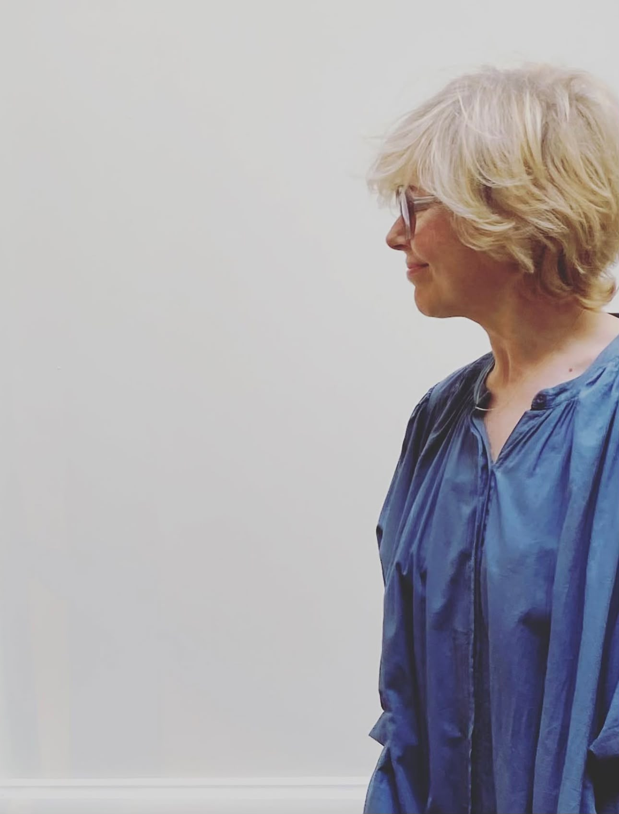
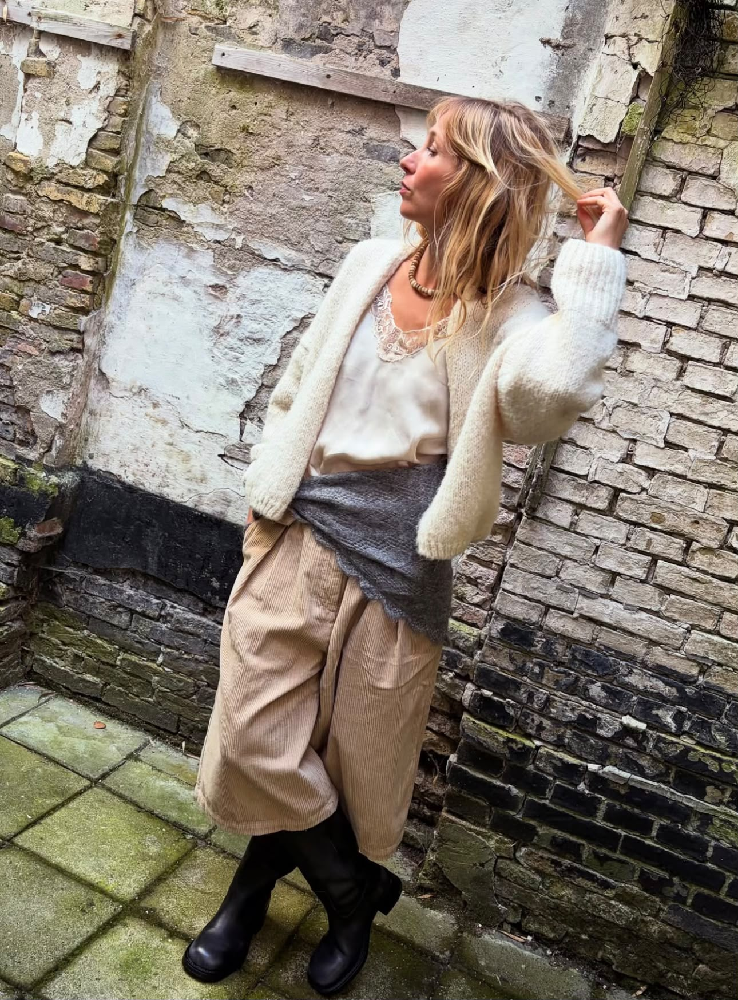
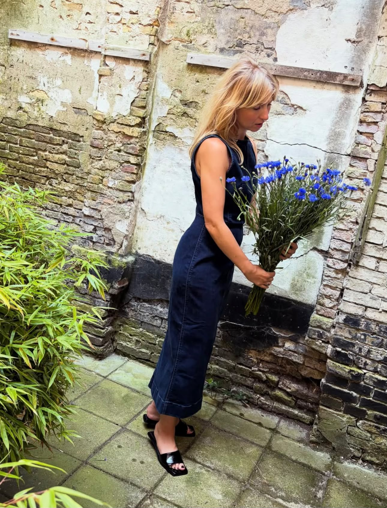
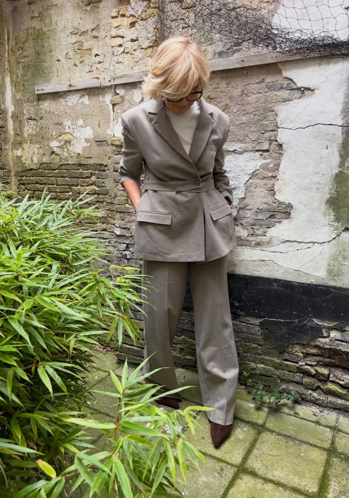

<style>
  .about-row {
    display: grid;
    gap: 60px;
    align-items: center;
    margin: 100px 0;
  }
  .about-row.text-left  { grid-template-columns: 0.8fr 1.2fr; }
  .about-row.text-right { grid-template-columns: 1.2fr 0.8fr; }
  .about-photos {
    position: relative;
    height: 620px;
  }
  .about-photo-back,
  .about-photo-front {
    position: absolute;
    object-fit: cover;
    border-radius: 2px;
    display: block;
  }
  .about-photo-back {
    top: 0;
    width: 56%;
    height: 90%;
  }
  .about-photo-front {
    width: 42%;
    height: 60%;
    box-shadow: 0 24px 48px rgba(42, 45, 30, 0.2);
    z-index: 2;
  }
  .about-photos.pair-1 .about-photo-back  { left: 0; }
  .about-photos.pair-1 .about-photo-front { top: 32%; left: 42%; }
  .about-photos.pair-2 .about-photo-back  { right: 0; }
  .about-photos.pair-2 .about-photo-front { top: 32%; right: 42%; }
  .about-photo-single {
    width: 100%;
    height: 620px;
    object-fit: cover;
    object-position: top;
    border-radius: 2px;
    display: block;
  }

  @media (max-width: 800px) {
    .about-row {
      grid-template-columns: 1fr;
      gap: 32px;
      margin: 56px 0;
    }
    .about-row > *:first-child { order: 1; }
    .about-row > *:last-child { order: 2; }
    .about-photos { height: auto; }
    .about-photo-back,
    .about-photo-front {
      position: static;
      width: 100%;
      height: 300px;
      box-shadow: none;
    }
    .about-photo-back { margin-bottom: 16px; }
  }
</style>

<section style="
  padding: 100px 60px;
  max-width: 1140px;
  margin: 0 auto;
">

  <!-- Rij 1: tekst links, foto's rechts -->
  <div class="about-row text-left">

    <div>
      <p style="
        font-family: 'Cormorant Garamond', serif;
        font-style: italic;
        font-size: clamp(15px, 1.6vw, 19px);
        font-weight: 300;
        line-height: 1.6;
        color: var(--black);
        margin-bottom: 20px;
      ">“I think everything in life is art. What you do. How you dress. The way you love someone, and how you talk. Your smile and your personality. What you believe in, and all your dreams. The way you drink your tea. How you decorate your home. Or party. Your grocery list. The food you make. How your writing looks. And the way you feel. Life is art.”</p>

      <p style="
        font-family: 'Josefin Sans', sans-serif;
        font-size: 13px;
        font-weight: 200;
        letter-spacing: 3px;
        text-transform: uppercase;
        color: var(--olive-dark);
      ">— Helena Bonham Carter</p>
    </div>

    <div class="about-photos pair-1">
      
      
    </div>

  </div>

  <!-- Rij 2: foto's links, tekst rechts -->
  <div class="about-row text-right">

    <div class="about-photos pair-2">
      
      
    </div>

    <div>
      <p style="
        font-family: 'Cormorant Garamond', serif;
        font-size: clamp(16px, 1.8vw, 20px);
        font-weight: 300;
        line-height: 1.7;
        color: var(--black);
        margin-bottom: 24px;
      ">Kom zoals je bent. Kijk rustig rond. Probeer eens wat.</p>

      <p style="
        font-family: 'Cormorant Garamond', serif;
        font-size: clamp(14px, 1.2vw, 16px);
        font-weight: 300;
        line-height: 1.75;
        color: var(--muted);
        margin-bottom: 22px;
      ">Bij MOJ verkopen we dameskleding, maar we houden niet zo van het idee dat kleding voor één soort mens, stijl of moment is.</p>

      <p style="
        font-family: 'Cormorant Garamond', serif;
        font-size: clamp(14px, 1.2vw, 16px);
        font-weight: 300;
        line-height: 1.75;
        color: var(--muted);
      ">De ene keer zoek je gewoon die goede basic. De volgende keer trek je iets aan waarvan je denkt: dit is eigenlijk helemaal niks voor mij. Om het vervolgens toch mee te nemen.<br>Juist dát maakt kleding leuk. Dat je jezelf af en toe verrast.</p>
    </div>

  </div>

  <!-- Rij 3: tekst links, foto rechts -->
  <div class="about-row text-left">

    <div>
      <p style="
        font-family: 'Cormorant Garamond', serif;
        font-size: clamp(14px, 1.2vw, 16px);
        font-weight: 300;
        line-height: 1.75;
        color: var(--muted);
        margin-bottom: 22px;
      ">Daarom hoef je bij ons ook nergens haast mee te hebben. Kijk. Pas. Combineer. Loop nog een rondje. Een goede keuze maken mag best even duren. En ondertussen mag het gewoon leuk zijn.</p>

      <p style="
        font-family: 'Cormorant Garamond', serif;
        font-size: clamp(14px, 1.2vw, 16px);
        font-weight: 300;
        line-height: 1.75;
        color: var(--muted);
        margin-bottom: 22px;
      ">Onze dames helpen je graag. Met zoeken, twijfelen, combineren of juist helemaal niets daarvan. Je kunt binnenkomen met een heel duidelijk plan, maar ook gewoon voor een sneup.</p>

      <p style="
        font-family: 'Josefin Sans', sans-serif;
        font-size: 14px;
        font-weight: 200;
        letter-spacing: 4px;
        text-transform: uppercase;
        color: var(--olive-dark);
        line-height: 2.4;
      ">Wij zijn er voor allebei.<br>Tot moj.</p>
    </div>

    

  </div>

</section>
